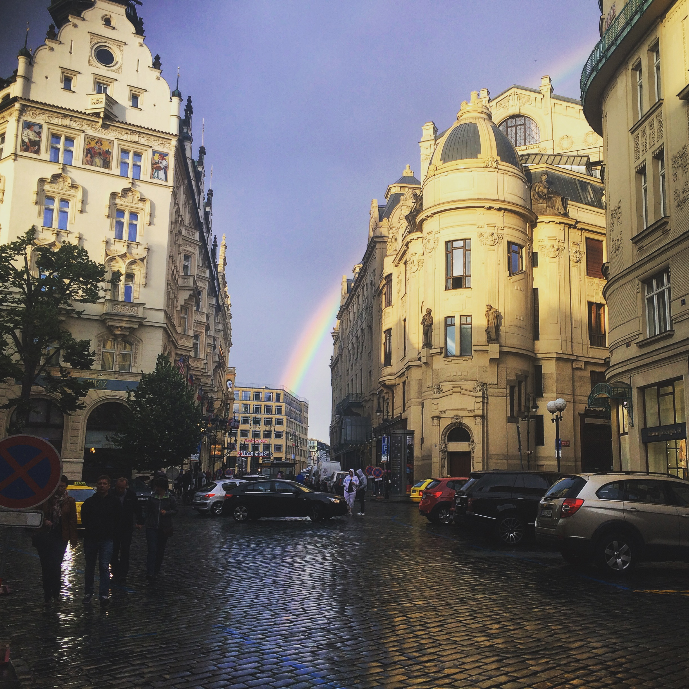

chriscelledelacruz
"Beauty is in the eye of the beholder"
I have always been intrigued by landscape photography because of its ability to capture several stories and details in one capture. As you may have noticed, I aim to better understand colors and its power to bring out human emotions out of images. The pictures you see below are all originally taken by yours truly. If you want to use any of them, feel free to message me.
Equipment: iPhone 5, 2018: experimenting with DSLR and potentially drones!
City Life

Nature Ventures
International Escapades
